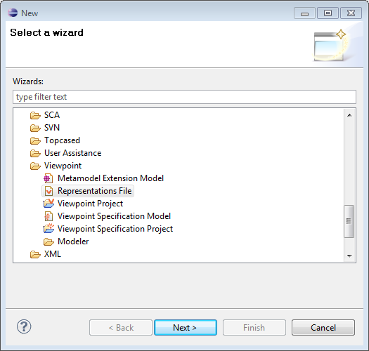
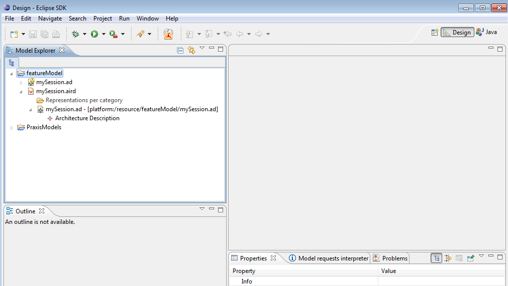
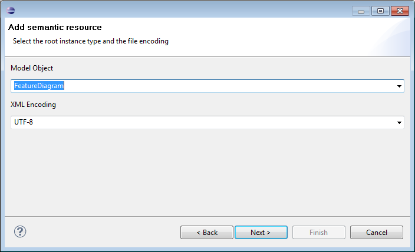

This chapter present a very quick of use of Feature Diagram Editor. For more information please refer to the sample wink video.
Our editor needs the use of the Design perspective like in Obeo Designer to create or use a Domain Specific Language (DSL). So, go to Window-> Open Perspective -> Other -> Design. A new view Model Explorer appears.
To create a new feature model , you can create a new viewpoint project in the Model Explorer view (File -> New ->Other -> General -> Project. Call it featureModel.
Then, create a new Session (File -> New -> Other-> Viewpoint -> Representation File) .

Click on Next and check empty file.
You obtain a wizard as in the following figure :

Click on Finish.
Then, your Eclipse 's view looks like this:

![[Important]](gfx/admonitions/important.gif) | Session need to be opened |
|---|---|
Here session is opened. To open a closed session simply double click on the .aird file in the Model Explorer view. |
Next, right click on the session (here mySession.aird ) -> Add Model . You obtain the following wizard :

You can choose a EMF feature diagram model ever created with the feature diagram EMF editor proposed with this graphical editor or create a new EMF model selecting Create resource, Next and http://www.kermeta.org/featureDiagram as metamodel URI as shown in the following figure.
Select FeatureDiagram as Model Object as shown on the following figure :

Now, you can choose the name of your new feature model, on the following figure it is fd.featurediagram :

| Use .featurediagram extension |
|---|---|
Do no forget to give the extension .featurediagram to the new EMF file created by this way. Otherwise, you could not use the Praxis contraints associated to this feature diagram editor on it. |
Click on Finish. A new wizard appears as in the following figure, select the viewpoint Design on it.

Then click on the little arrow at the left of the session file (.aird) in the Model Explorer view. You obtain the following figure :

Right click on Feature Diagram true selected in the wizard above, New Representation -> new Feature Diagram Editor.
Double click on new Feature Diagram Editor, you obtain a graphical editor as in the following figure :